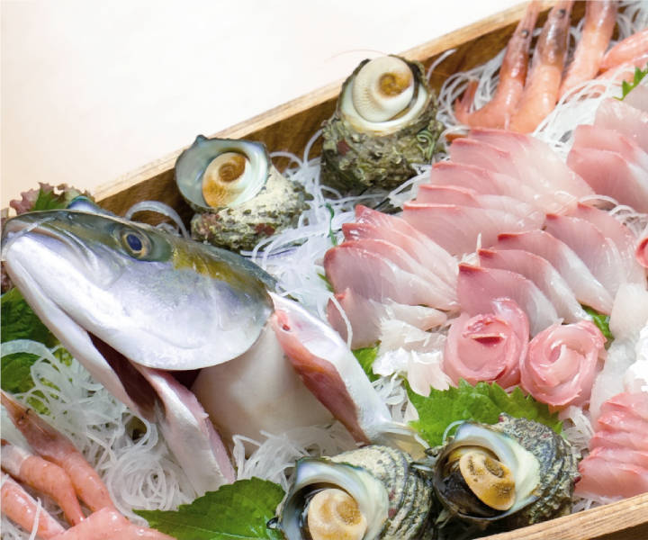
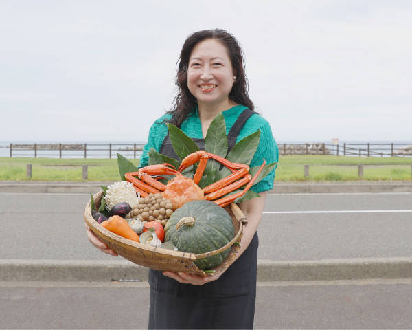
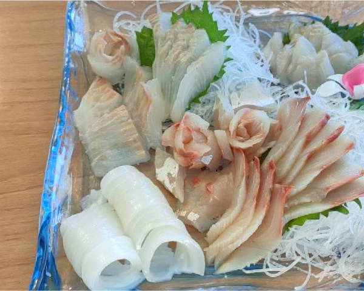
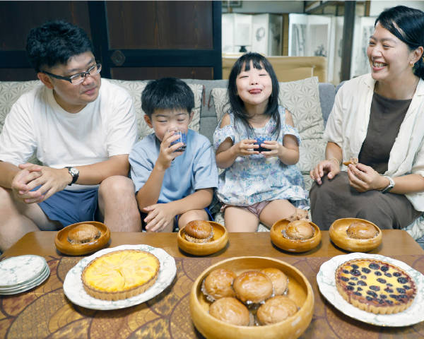

お料理
漁港からあがった旬の新鮮なお魚や女将が趣味で作ったスイーツを食卓にお出しします。ここでしか味わえないお料理をお腹いっぱい召し上がってください。
お食事

地場の食材を使っています
通年、地元からいただいた食材は、お野菜・お米は福井県のこしひかり、冬は越前蟹をお出ししています。懐かしい、また体に優しい手料理の味をご堪能ください。

海辺の幸をご堪能あれ
季節によって上がる魚は様々。ヒラマサ、剣先、イサキ、クロダイ、アジ、マグロなど越前海岸でとれた旬の魚が並びます。口の中に広がる贅沢な味わいをお楽しみください。
誕生日や結婚記念日、
七五三などの節目のお祝いに
ご家族やお友達のお祝いは、よねやでお過ごしください。女将が趣味で作るスイーツをお出ししています。ご家族がテーブルを囲んで笑い合う、そんなひとときのお手伝いができたら嬉しいです。
